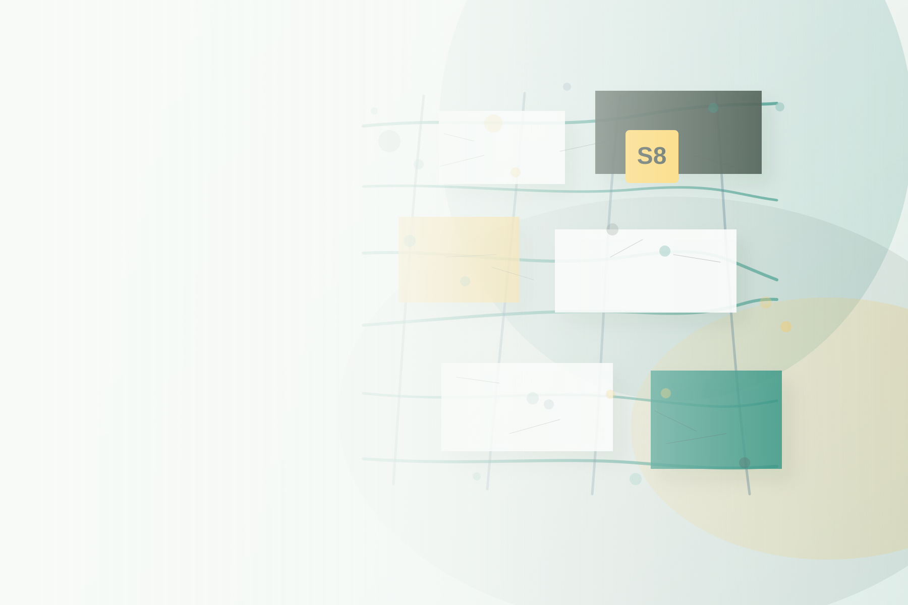

Notariat8
notariat8.de is the first visible branch: an industry project for notarial processes, collaboration, training and future maintenance.

A non-profit brand for open organization building blocks. Software8 makes recurring business processes visible, reusable and ready for new industry projects.
Many small and medium-sized organizations maintain the same processes, evidence trails and approval paths. Software8 turns that shared work into open building blocks instead of isolated custom solutions.
Organisation as Code is the open core.
Verticals are not a product line built in advance. They emerge where enough customers, partners and interested people carry a shared professional need.
notariat8.de is the first visible branch: an industry project for notarial processes, collaboration, training and future maintenance.
law firm
tax office
property management
further industries
This repository is the source for the visual language of the project family. Colors, typography, spacing and layout patterns should later be used consistently by Notariat8 and future verticals.
Software8 is intended to become a non-profit GmbH under AO 52 and protect the open core. For subprojects like Notariat8, a non-profit UG can organize maintenance, care, training and partner work.
The homepage tells the roof idea. The verticals will show how it becomes practical in individual industries.